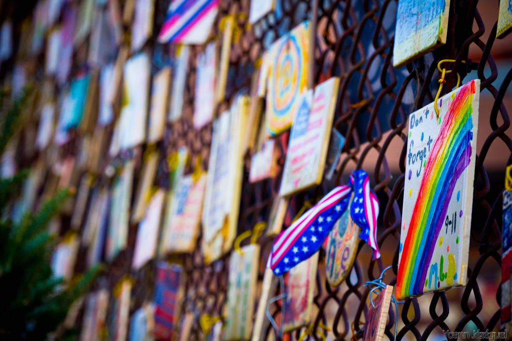

New York City
Music To Listen To When Walking In New York City!
Introduction
New York City is an enormous city. Each of its five boroughs is the equivalent of a large city in its own right and may itself be divided into districts. These borough and district articles contain sightseeing, restaurant, nightlife and accommodation listings — consider printing them all. New York City with the Empire State Building and One World Trade Center from Rockefeller Center. New York City (also referred to as "New York", "NYC", or "The Big Apple"), is the most populous city in the United States. It lies at the mouth of the Hudson River in the southernmost part of the state of New York.
New York City has a population of approximately 8.2 million people. The New York Metropolitan Area, which spans lower New York, northern New Jersey, and southwestern Connecticut, has a population of 18.7 million, making it the largest metropolitan area in the U.S. As of 2014, it was one of the 15 largest metro areas in the world. New York City is a center for media, culture, food, fashion, art, research, finance, and trade. It has one of the largest and most famous skylines on earth, dominated by the iconic Empire State Building.
Boroughs
New York City consists of five boroughs, which are five separate counties. Each borough has a unique culture and could be a large city in its own right. Within each borough individual neighborhoods, some several square miles in size, and others only a few blocks in size, have personalities lauded in music and film. The five New York boroughs are:
- Manhattan (New York County) The famous island between the Hudson and East Rivers, with many diverse and unique neighborhoods. Manhattan is home to the Empire State Building in Midtown, Central Park, Times Square, Wall Street, Harlem, and the trendy neighborhoods of Greenwich Village and SoHo. Fun things to do while visiting Manhattan!
- Brooklyn (Kings County) The most populous borough, and formerly a separate city. Located south and east of Manhattan across the East River. Known for the Brooklyn Botanic Garden, Prospect Park, The Brooklyn Museum, The New York Aquarium and a key NYC landmark Coney Island. Places to visit and things to do in Brooklyn.
- Queens (Queens County) Located to the east of Manhattan, across the East River, and north, east, and south of Brooklyn. With over 170 languages spoken, Queens is the most ethnically diverse region in the United States, and one of the most diverse in the world. Attractions to visit while in Queens.
- The Bronx (Bronx County) Located north of Manhattan Island, the Bronx is home to the Bronx Zoo, the New York Botanical Gardens, and the New York Yankees professional baseball team. Must do activities while in The Bronx.
- Staten Island (Richmond County) A large island in New York Harbor, south of Manhattan and just across from New Jersey. Unlike the other boroughs, Staten Island has a somewhat slower pace and has less density. It contains several parks and a zoo.
Understand

Central Park is pretty at any time of the year. New York City is one of the global hubs of international finance, politics, communications, film, music, fashion, and culture. Alongside London it's one of only two universally acknowledged to be "World Cities" - the most important and influential cities on Earth. It's home to many world-class museums, art galleries, and theaters. Many of the world's largest corporations have their headquarters here. The headquarters of the United Nations is in New York and most countries have a consulate here. This city's influence on the globe, and all its inhabitants, is hard to overstate, as decisions made within its boundaries often have impacts and ramifications across the world.
Immigrants (and their descendants) from over 180 countries live here, making it one of the most cosmopolitan cities in the world. Travelers are attracted to New York City for its culture, energy and cosmopolitanism. English is the primary language spoken by most New Yorkers although in many communities it is common to hear other languages that are generally widely understood. In many neighborhoods, there is a large Latino/Hispanic population, and many New Yorkers speak Spanish. Most cab drivers speak either Arabic, Hindi or Bengali. There are also many neighborhoods throughout the city that have a high concentration of Chinese immigrants where Mandarin or Cantonese may be useful. In some of these neighborhoods, some locals may not speak very good English, but store owners and those who would deal frequently with tourists or visitors all will speak English.
The World Trade Center attacks of 11 September 2001 were a shared ordeal for the city's inhabitants. Despite those events, from 2003 to the present, New York City has rebounded and surpassed itself in growth.
Crime is down to one-third of the levels of 1990 and New York City is now one of the safest large cities in America.
Orientation
At the center and western edge of New York City is the borough of Manhattan, a long, narrow island nestled in a natural harbor. It is separated from The Bronx on the north-east by the Harlem River (actually a tidal strait); from Queens and Brooklyn to the east and south by the East River (also a tidal strait); and from the State of New Jersey to the west and north by the Hudson River. Staten Island lies to the south-west, across Upper New York Bay.
Although Manhattan runs northeast to southwest, it is referred to as if it ran north-south. Thus, "uptown" means north, and "downtown" means south. Street numbers continue from Manhattan into the Bronx, and the street numbers rise as one moves farther north (however, in the Bronx, there is no simple numerical grid, so there may be 7 blocks between 167 St. and 170 St., for example). Avenues run north and south. In Brooklyn the opposite is true, as street numbers rise as one moves south. Queens streets are laid out in a perpendicular grid - street numbers rise as one moves toward the east, and avenues run east and west. Staten Island has no street numbers at all.
The term “the city” may refer either to New York City as a whole, or to the borough of Manhattan alone, depending on the context. The other boroughs, which are Brooklyn, The Bronx, Staten Island, and Queens, are sometimes referred to as “the outer boroughs.” The term "upstate" generally refers to any part of the State of New York north of the city limits of the Bronx, but not neighboring New Jersey or Connecticut.
People
The diverse population runs the gamut from some of America's wealthiest celebrities and socialites to homeless people. There are millions of immigrants living in the city. New York's population has been diverse since the city's founding by the Dutch. Successive waves of immigration from virtually every nation in the world make New York a giant social experiment in cross-cultural harmony.
The city's ethnic heritage illuminates different neighborhoods throughout the five boroughs. Manhattan's Chinatown remains a vibrant center of New York City's Chinese community, though in recent years the very large Chinese community in Flushing, Queens, has rivaled if not eclipsed it in importance, and three other Chinatowns have formed in New York City: the Brooklyn Chinatown in Sunset Park; the Elmhurst Chinatown in Queens; and the Avenue U Chinatown located in the Homecrest section of Brooklyn. Traces of the Lower East Side's once-thriving Jewish community still exist amid the newly-gentrified neighborhood's trendy restaurants and bars, but there are Chassidic communities in Borough Park, Crown Heights and Williamsburg, Brooklyn. Harlem has been gentrifying and diversifying and remains a center of African-American culture in New York. East (Spanish) Harlem still justifies its reputation as a large Hispanic neighborhood. Little known to most tourists are the large Dominican neighborhoods of Hamilton Heights and Washington Heights in upper Manhattan. Brooklyn's Greenpoint is famous for its large and vibrant Polish community, and the Flatbush section - once home to the Brooklyn Dodgers - is today a huge and thriving Caribbean and West Indian section. Queens and Brooklyn are known for being home to many of New York's more recent immigrant groups, which since 1990 have included large numbers of Russians, Uzbeks, Nigerians, Chinese, Irish, Italian, French, Filipinos, Yugoslavians, Indians, Sri Lankans, Pakistanis, Bangladeshis, Japanese, Koreans, Thais, Kenyans, Arabs (from throughout the Middle East and northern Africa), Mexicans, Puerto Ricans, Cubans, Dominicans, Ecuadorians, Brazilians, Colombians and Jamaicans. New York City's Caucasian population who are native born New Yorkers are overwhelmingly descended from the previous centuries immigrants: Irish, Italian or Eastern European Jewish, a smaller percentage are Turks, Yugoslavs, Albanians. Each of these groups has brought their cuisines with them, making NYC a city where authentic bagels, Pizza and ethnic foods are available everywhere. An important change has been taking place in the population recently. During the last 2 decades and especially since 2003, large numbers of young people, many of them recent college graduates and professionals from the rest of the USA have moved to New York City, mostly to Brooklyn, Manhattan, and the parts of Queens closest to Manhattan. They have changed things considerably and continue to add to New York's vitality and artistic output. They have completely changed their neighborhoods in Brooklyn and Manhattan, such as Williamsburg, Brooklyn and Lower East side, Manhattan. One important thing to note about New York City, is its never-ending change, new stores, businesses, buildings and even skyscrapers replace the previous structures, there is always new construction. Photographs of the same busy street 10 or 20 years ago are unrecognizable today.
Economy
York City is home to 46 Fortune 500 companies. Its gross metropolitan product of $1.7 trillion is the largest of any American city and represented approximately 9% of the American economy. If it were a nation, the city would have the 16th-highest GDP in the world. New York's constantly expanding economy is the main reason why millions have immigrated to the city, from all over the world and all over the country over the past 2 centuries of the city's growth.
New York is the national center for several industries. It's the home of the two largest US stock exchanges (NYSE, NASDAQ) and many banks. The famous Wall Street is where the New York Stock Exchange (NYSE) is as well as the famous investment banks and financial investment firms. Wall Street is located in the Financial District of Lower Manhattan.
Source: WikiTravel New York City